Task 5: Create Server Profile Template
A server profile contains all the identifiers and settings which makes the server unique. Creating a Server Profile Template allows multiple Server Profiles to be derived from the template and each Server Profile will have the same settings as the template. For example, if the template uses a specific BIOS Policy, then all the derived server profiles will also apply the settings from that BIOS Policy.
The image below is an overview of the policies used in a Server Profile Template:
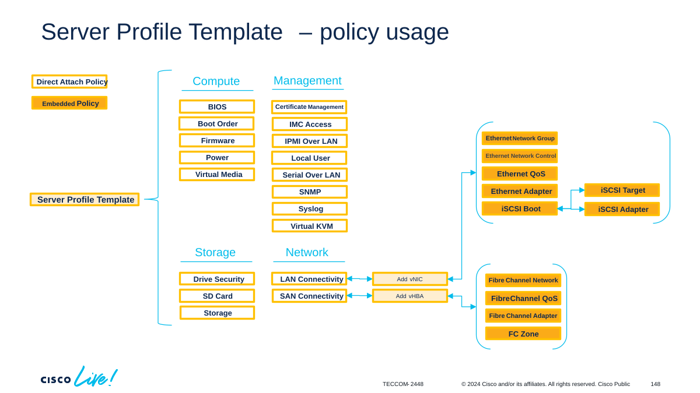
Before we begin creating a Server Profile Template, we will create a vNIC template and vHBA template.
Step 1: vNIC Template
In Intersight select Templates under the Configure section on the left side of the window. Select the vNIC Templates tab and then select Create vNIC Template:

Provide a name, set the tag, and click Next:
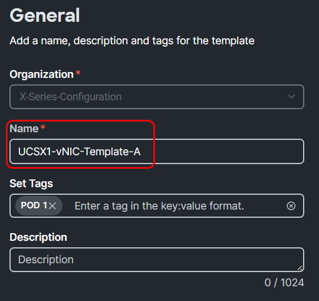
Traditionally there may be two or more templates created and the admin might add an “A” or “B” to the name to see over which Fabric Interconnect the traffic will go, for example podX-vNIC-template-A and podX-vNIC-template-B.
Click on Select Pool for the MAC Pool, and select create Create Pool to create a new MAC Address Pool.
Provide a name, set the tag, and click Next:
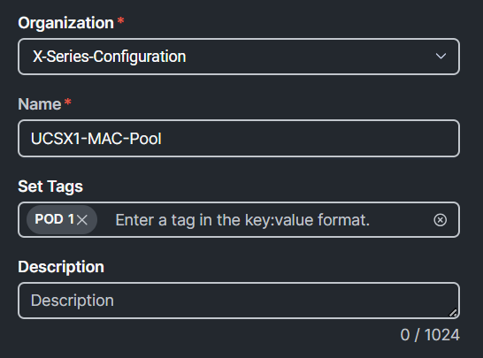
Use the prefix of 00:25:B5 for the first three octets, then your pod number for the fourth octet followed by zeroes in this format: 00:25:B5:XX:00:00 (see example below). Set the size to 16 and click Create:
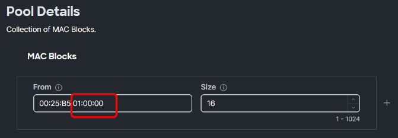
This template will be for traffic that is going over Fabric Interconnect A. Ensure Switch ID is set to A.
If the Switch ID is B, the traffic is going over Fabric Interconnect B.
An available option is to allow the UCS Hardware to do the failover of the vNIC traffic between Fabrics A and B. Failover in the hardware can have advantages, but for many solutions we create two vNICs so the OS will have two interfaces with each going over one side of the UCS fabric.
Ensure Failover is Enabled (This will save time in the lab by not having to create another vNIC template for the other Fabric Interconnect):

When Failover is enabled we create only one vNIC and the OS only sees one interface. When there is a failover of the Fabric Interconnect, the traffic will switch to the other Fabric Interconnect and the OS won’t know about this event.
Now click Select Policies for the Ethernet Network Group, select Create Policy, provide a name, set the tag, and click Next:
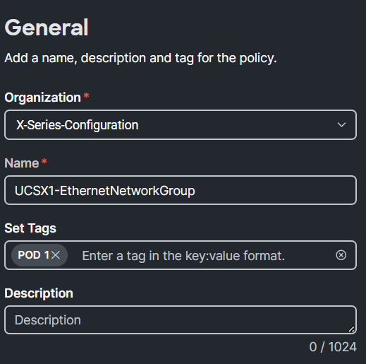
Best Practices:
Populate with required VLANs. Consider using multiple Policies to coincide with specific use-cases of the intended vNIC.
In Most cases, you would want to use the same Ethernet Network Group Policy for vNICs assigned to both A and B Fabrics. For HA Failover purposes, you want the same VLANs to be able to be passed from both Fabrics.
Keep the default settings. Change it only if needed.
Click the Add VLANs drop-down box, select Enter Manually, enter VLAN 70 and select Enter. Under the VLAN ID table, select the actions button for VLAN 70,select Set Native VLAN, then click Create:
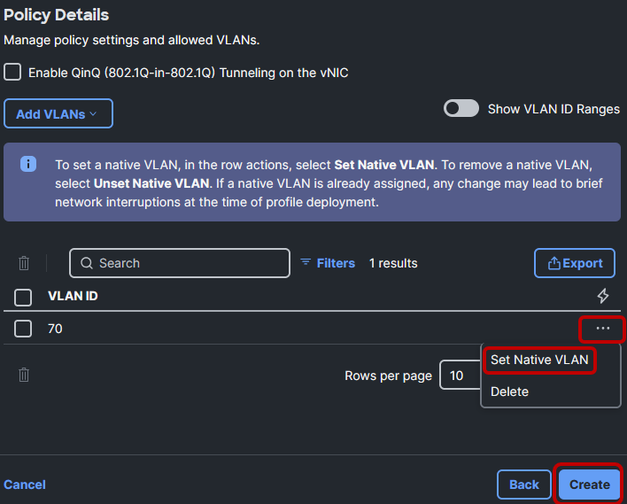
Fromthe Select Policies screen, choose the policy you just created and click Select.
Click Select Policies for Ethernet Network Control, select Create Policy, provide a name, set the tag, and click Next:

Toggle the Enable CDP switch to enable CDP, toggle the Enable Transmit switch under LLDP as shown below, then click Create:
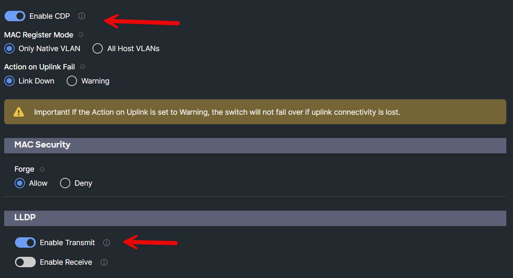
Click Select Policy for Ethernet QoS, select Create Policy, provide a name, set the tag, and click Next:

Select the UCS Server (FI-Attached) tab, ensure MTU, Bytes is 1500 and select Create:
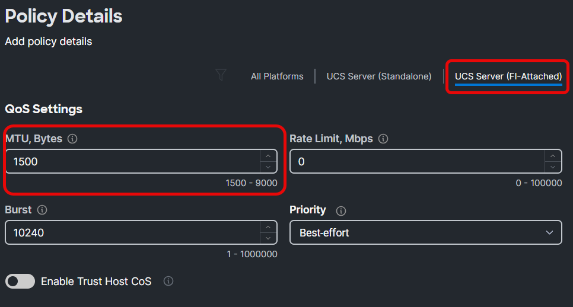
Best Practices:
In the absence of any specific guidance or use-case, use default settings.
Keep in mind that with UCS the Ethernet QoS Policies are only enforced if there’s congestion sensed on the port. Otherwise, all the queues are available for existing traffic
Simple Use Case Example: Video Streaming Packets (WebEx as example) would likely need a higher priority traffic flow than email traffic.
If you are using Jumbo MTU (Size 9000), you will have to configure it end to end and here you can change it for the vNIC.
Click Select Policy for Ethernet Adapter, select Create Policy, provide a name, set the tag, and click Select Default Configuration:

Under Select Cisco Provided Configuration, click on the eye next to Linux as shown below to see the policy details:
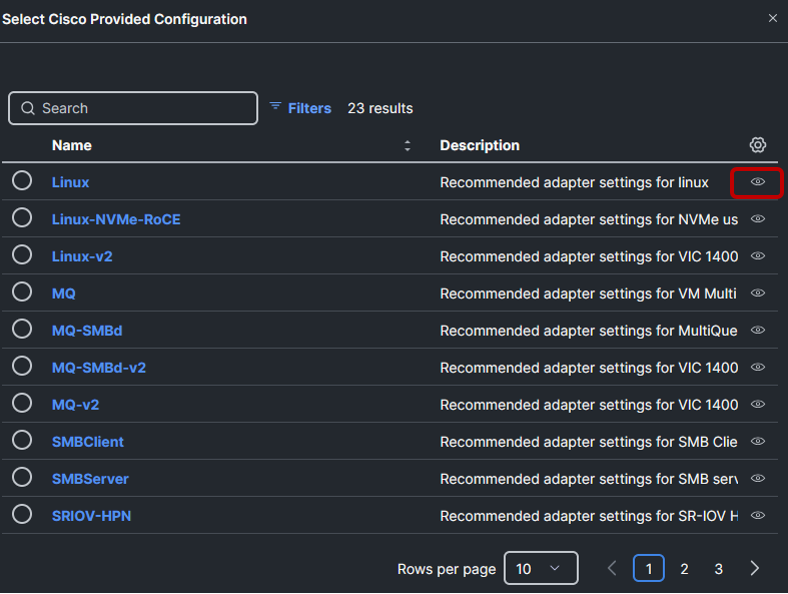
Close the pop-up window by clicking the X next to View Linux, select the radio button next to Linux, then click Select:

Best Practices:
Since the Default Settings have been pre-configured for a given OS-type and/or Workload Use-Case, certainly you want to adopt the correct default settings for optimal network performance of the server.
If you are going to change a setting from the default settings, highly recommend you do so in-accordance with either a vender supplied paper or Cisco Validated Design (CVD) document. Experimenting with different settings should be vetted in a Lab Environment before introducing those settings to a Production Environment.
Click Next
Select UCS Server (FI-Attached), leave all the settings default, and click Create:
Walk through the settings and see if there are features, like PTP that can be useful for your environment.
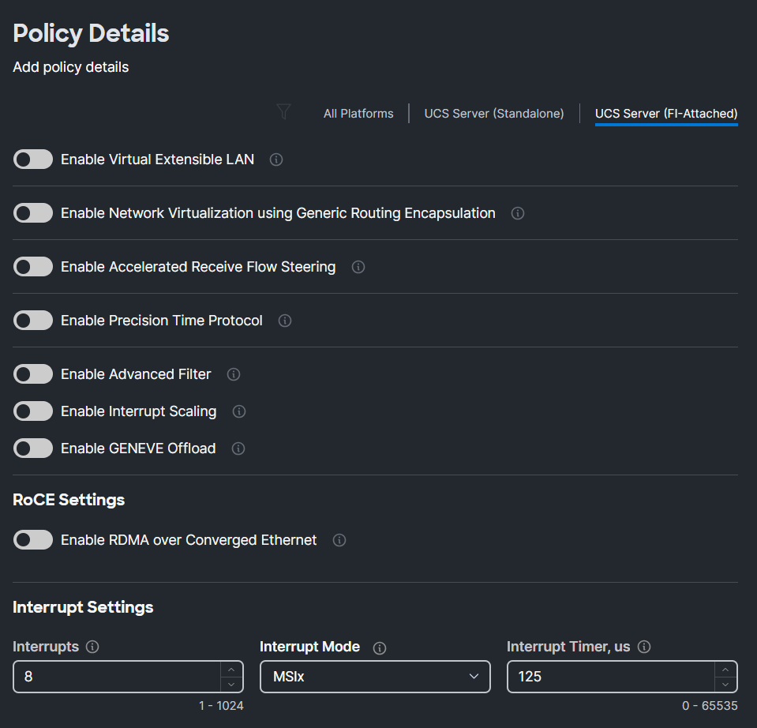
There are different features of the vNIC such as usNIC, VMQ and SR-IOV. Leave the Connection set to Disabled and click Create.
Now we have created one vNIC template. Because the Failover is enabled, we are not going to create another vNIC template where the traffic is going over Fabric Interconnect B. In certain production environments you will have to do this in order to divide traffic across the A and B side fabrics.
Step 2: vHBA Template
Now click the vHBA Templates and click on Create vHBA Template:

Give the template a unique name with -A at the end as we are configuring a vHBA template for the A-Fabric, set the tag, and click next:
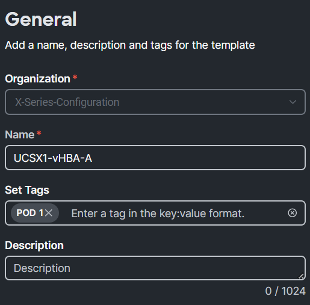
Click Select Pool under the WWPN Pool section, click Create Pool, give the pool a unique name, set the tag, and click Next:

In the From field, enter your POD number plus 00:00 for the last two octets (i.e. 20:00:00:25:B5:01:00:00). Set the Size to 16 then click Create:
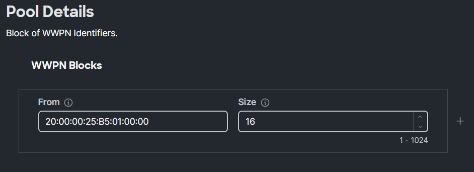
Back in the vHBA Template, select the correct Switch ID (A for VSAN-A and later on B for VSAN-B):
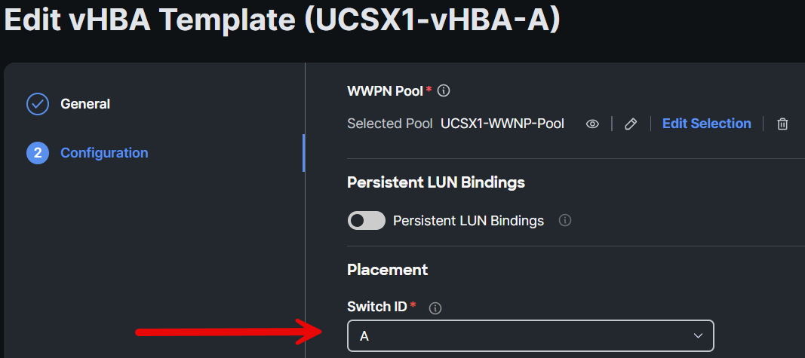
Click Select Policy under Fibre Channel Network, click Create Policy, provide a name, set the tag, and click Next (for vHBA-A Template, create a new Fibre Channel Network Policy with VLAN 700):

Select UCS Server (FI-Attached), fill in the VSAN ID (700 for vHBA-A. 701 for vHBA-B), and select Create:

Click Select Policy under Fibre Channel QoS, click Create Policy, provide a name, set the tag, and click Next:
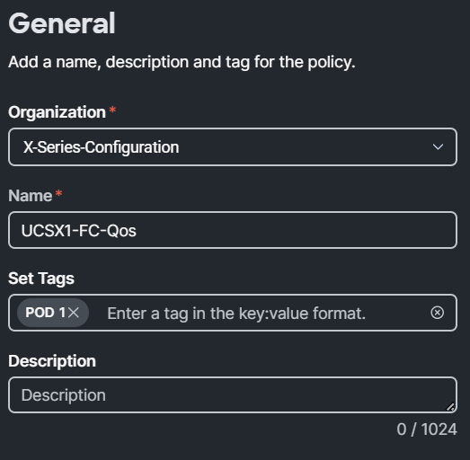
Select UCS Server (FI-Attched) and click Create:
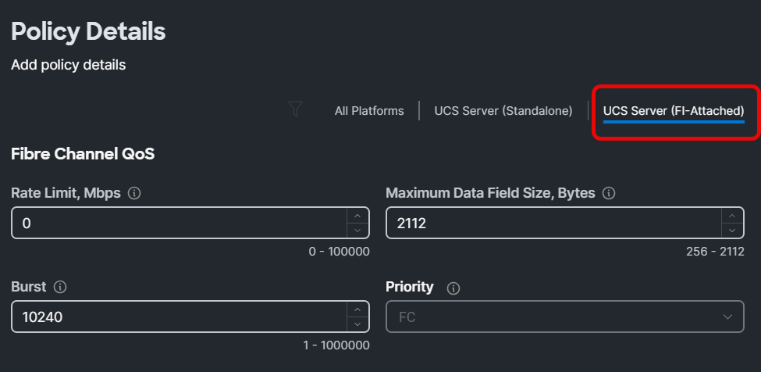
Click Select Policy under Fibre Channel Adapter, click Create Policy, provide a name, set the tag, and click Select Default Configuration, choose Linux, click Select, click Next, then click Create:

Note: If the Fabric Interconnect is in FC Switch Mode you have to configure the FC Zones because FC zoning would be handled by the FIs. Most common is to leave the Fabric Interconnect in the default FC End-host mode and the FC zones will be configured on the upstream FC switches such as Cisco MDS.
Click Create to finalize the creation of the vHBA template for VSAN-A. Now return to the step when vHBA Template A was created and follow the same steps to create a template for VSAN-B. Be sure to select switch ID B for the placement and when you create the create the Fibre Channel Network Policy to change the VSAN ID to 701. Once the second template has been created, you will now see two vHBA Templates as shown below:
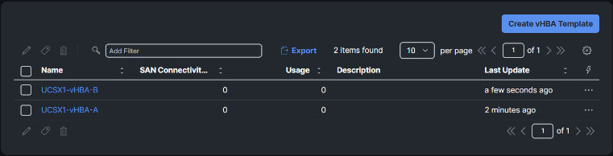
Step 3: UCS Server Profile Template
Under Templates, select UCS Server Profile Templates and click on Create UCS Server Profile Template.
Provide a name, select the radio button next to UCS Server (FI-Attached), set the tag, and click Next:
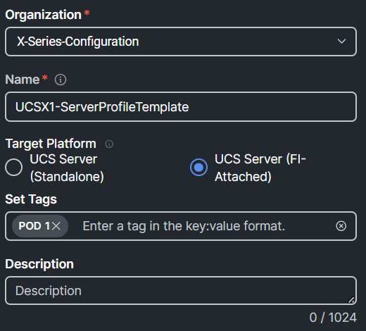
Now we have to create different types of Policies. Click on Select Pool under UUID Pool to create a new UUID Pool Policy.

Now click Create Pool under Select Pool. A UUID is a unique identifier for the server. Provide a name, set the tags, and click Next:

Fill in the Prefix with a unique sequence (you can start with your pod number), provide the starting UUID suffix in the field under UUID Blocks, make the size of the UUID pool 16, and then click Create:

Click Select Policy next to BIOS, click Create Policy, provide a name, set the tag, and click Next:
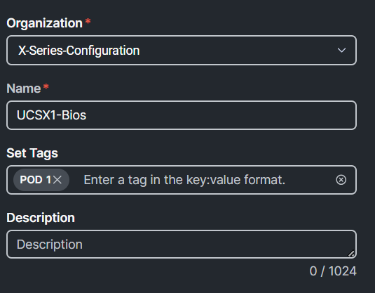
Make sure UCS Server (FI-Attached) is selected (Note: Any changes to this policy in the future will require a reboot of the server to take effect.)
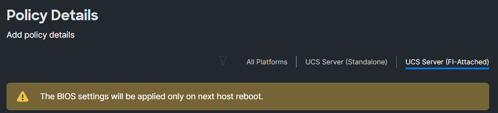
BIOS Recommendations:
- To have more information about the default settings and what is means, read Cisco UCS Server BIOS Tokens in Intersight Managed Mode:
- For High Performance BIOS settings read Performance Tuning Best Practices Guide for Cisco UCS M7 Platforms:
Take some time to expand and review various settings that can be applied to UCS servers. For now, we won’t make any modifications leaving everything to their platform-default state and proceed by clicking Create.
Now click Select Policy next to Boot Order, click Create Policy, provide a name, set the tag, and click Next:

There are many possibilities for booting UCS servers. For this lab, we will be adding three methods (some servers in the lab have NVMe drives which can be booted from instead of M.2 drives).
Ensure UCS Server (FI-Attached) is selected and toggle Enable Secure Boot. UEFI will be default when selecting this option.
Click on Add Boot Device and select Virtual Media. Type vMedia in the Device Name field and leave the Sub-Type None.
Now add a second boot device by clicking on Add Boot Device, select Local Disk, type Local in the Device Name, and type MSTOR-RAID in the Slot field. (Note: storage slot information can be found in the inventory of the server under Storage Controllers if needed). Leave the remaining input fields empty.
In Task 4, you were asked to document f your server has NVMe drives. If it does, click Add Boot Device, Select NVMe, type FRONT-NVME-1 in the Device Name field. Clcik the up arrow for the the Virtual Media to ensure it is at the top of the list after creating the boot options and then click Create:


NEW: PCIe Connectivity Policy
We will skip the Firmware Policy and Memory Policy for this lab but will create a PCIe Connectivity Policy showing the process to configure a policy to leverage GPUs and SmartNICs that would be hosted in the X580p PCIe node and X9516 XFM. Next to PCIe Connectivity, click Select Policy. From the Select PCIe Connectivity menu, click Create Policy. Ensure the organization is correct for the lab and give the policy a unique name, set the tag, and click Next.
From the Policy Details section, change the first ID to 1, change the quantity to 2, and select UCSC-GPU-RTXP6000 from the GPU model. Now toggle the selection to enable the SmartNIC allocation and select UCSC-P-N7S400GFO from the dropdown menu. Once this is done, click Add Mapping which will expand a second selection. Given you can’t mix GPU models in the same host, there is no selection for the user to select a different GPU model. Toggle the selection to enable the SmartNIC allocation for the second CPU and verify the UCSC-P-N7S400GFO SmartNIC is already selected in the dropdown menu. Once completed, your selections should be similar to the figure below. If so, select Cancel, select Leave when prompted, and then Cancel on the Select PCIe Connectivity menu as we do not have any PCIe nodes/X9516s available in the lab chassis leveraged for this lab:
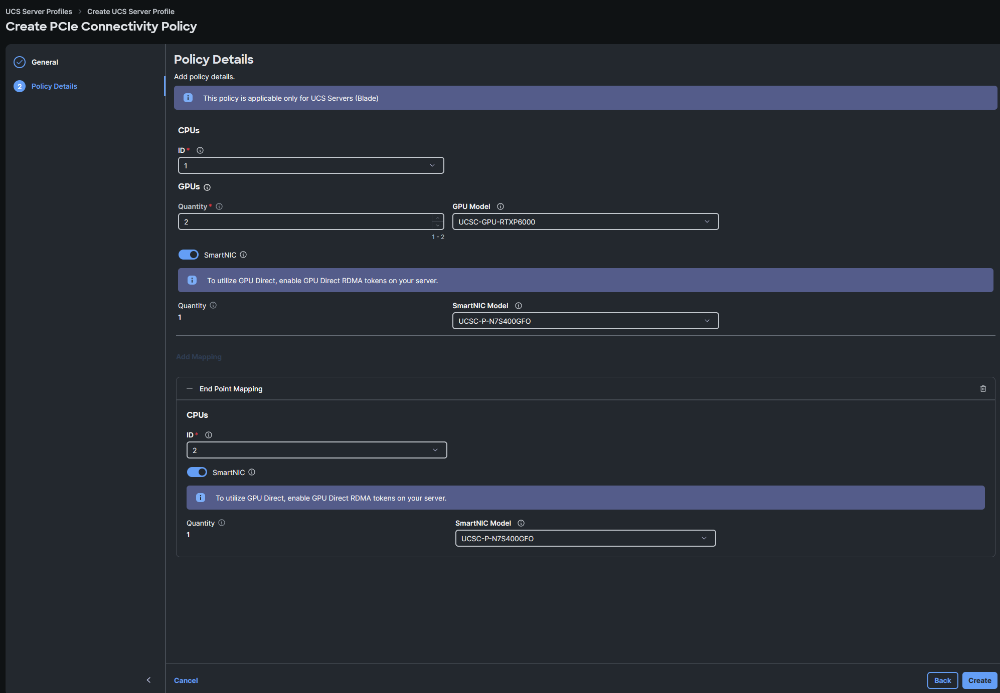
Now click Select Policy next to Power, click Create Policy, provide a name, set the tag, and click Next:

Ensure the UCS Server (FI-Attached) tab is selected, ensure the Power Profiling slider is enabled (note: this option is only for UCS X-Series servers and allows the power manager to run power profiling utility to determine the power needs of the server), set the Power Priority to Medium, set Power Restore to Last State, leave the PPL state default, and click Create:
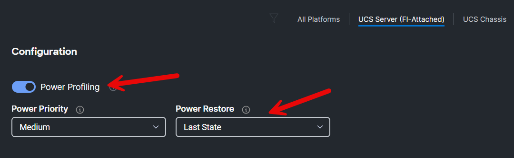
Best Practices
Recommend profiling on all servers. PCIe node included with server.
Highest priority servers are allocated any power available above minimum.
Once higher priority servers have their max allocation, lower priority servers are allocated what is left.
Power restore refers to chassis power restoration. Last State is the recommended setting.
The Scrub Policy settings will be skipped in this lab.
Click Select Policy next to Virtual Media, click Create Policy, provide a name, set the tag, and click Next:

Ensure the UCS Server (FI-Attached) tab is selected and verify all three settings (Enable Virtual Media, Enable Virtual Media Encryption and Enable Low Power USB) are enabled (don’t add Virtual Media to the policy), and click Create:

Now, proceed to the Management Configuration of the Server Profile Template by clicking Next.
We are not going to configure Certificate Management, IPMI over LAN, Local User, Serial Over LAN.
Local User is needed for the usage of CURL and get Redfish information.
The IMC Access Policy is not required, but we will create a policy for this lab. Next to IMC Access, click Create Policy, provide a name, set the tag, and click Next:

Choose In-Band Configuration, type 70 in the VLAN ID field, ensure IPv4 is selected, click Select IP Pool, choose UCSXKVMPool, click Select, then click Create:

Next to SNMP, click Create Policy, provide a name, set the tag, and click Next:

Enable SNMP, type 161 in the SNMP Port input box, and click Create.

Next to Syslog, click Create Policy, provide a name, set the tag, and click Next:

Enable Syslog Server 1, input 172.20.10.10 in the Hostname/IP Address input field, select Warning from the Minimum Severity to Report dropdown box, and click Create:
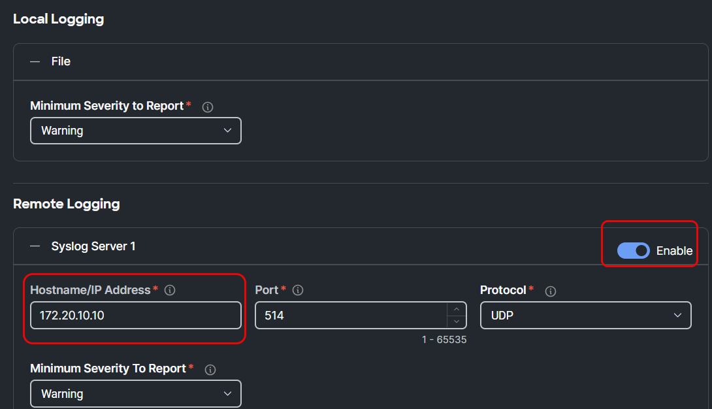
Next to Virtual KVM, click Create Policy, provide a name, set the tag, and click Next:
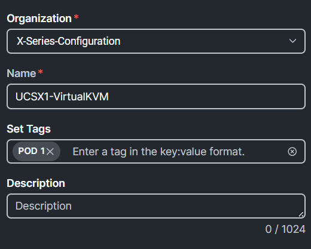
Enable Allow Tunneled vKVM to settings and click Create, then click Next to proceed to the Storage Configuration:

Next to Storage, click Create Policy, provide a name, set the tag, and click Next:

Enable the M.2 RAID Configuration, select MSTOR-RAID-1, click Create, then click Next to proceed to the Network Configuration:
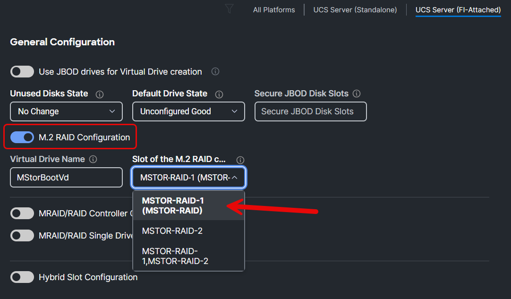
Best Practices and Recommendations:
When migrating a server any existing storage configuration will remain intact when the server is discovered in Intersight.
Intersight will never automatically delete a Virtual Drive unless defined to do so in a scrub policy.
If a scrub policy is not defined, existing Virtual Drives can be removed by manually deleting them from the Intersight server inventory and rebooting the host.
Intersight does not support explicit deletion of Drive Groups. Drive Groups are auto removed if they are empty.
If no storage policy is attached to the profile the existing drives will be discovered by the host. A server will also likely boot successfully from an existing UEFI Boot Drive.
If a storage policy is applied from Intersight it will ONLY create new drives or adopt existing drives if the configuration matches.
For the M.2 HWRAID module you simply toggle the setting in the storage policy.
Un-toggling the M.2 HWRAID option will NOT remove an existing Virtual Drive.
If a Virtual Drive is defined in the storage policy RAID section and matches an existing volume the existing volume will be “adopted” by the policy.
What this means is, nothing will happen, but the policy deploy will succeed.
If the drive name is the same, but the settings are different (RAID level, size, included drives) the policy deploy will fail.
Any existing volumes that do not appear in the policy by name will be left as-is on the controller.
If there is not an existing volume with the same name a new volume will be created. Deploy will fail if there is insufficient space or any of the physical drives are used in a different drive group configuration.
Decommissioning or recommissioning operation will not delete the RAIDs or data on the disks.
Be careful to review the Server Inventory, particularly Storage Controller and Drive Population in the Server before creating the IMM Storage Policy
Boot from Local Storage: https://www.cisco.com/c/en/us/support/docs/servers-unified-computing/ucs-infrastructure-ucs-manager-software/218160-configure-boot-from-local-storage-in-int.html
Next to LAN Connectivity, click Create Policy, provide a name, set the tag, and click Next:

The vNIC placement can be done via manual configuration or Auto vNIC Placement. We are going to create the vNIC Placement Manually.

Click add and select vNIC from Template


Give it the name vETH0. Now you see the settings from the template already populated.
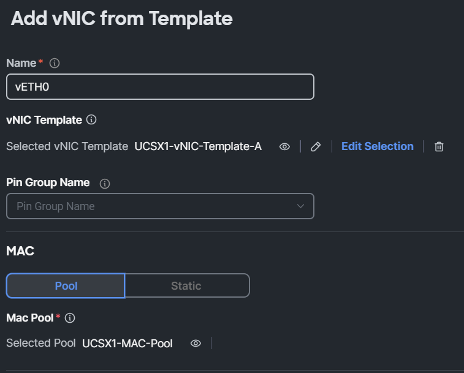
Scroll down and ensure the PCI Order is set to 0 then click Add:

Click on Graphic vNIC Editor to view a graphical representation of the connectivity:
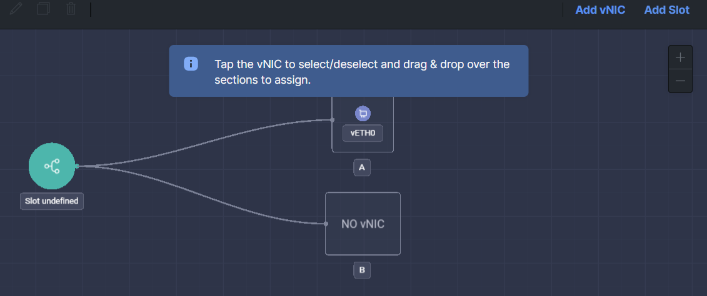
Click on Save, then click Create.
Because of the hardware failover that is configured in the vNIC Template, you don’t have to create vETH1.
Best Practices and recommendations:
Auto vNIC Placement:
The system defines the adapter placement and PCI order
Great for single adapter Blades/Servers. vNICs precede vHBAs.
With Auto-placement, if more than one adapter is being used the neely created vNICs are distributed across both adapters during Server Profile deployment.
If using Auto vNIC placement ofr LAN Connectivity Policy, you must chose Auto placement for SAN Connectivity policy. You cannot mix placement options.
Manual vNIC Config with Simple Placement
You must select PCI order and it has to start with 0 for the first PCIe device. The unique numbering is per adapter.
It allows system to automatically determine the Slot ID and PCI Link.
Do not use simple placement when having dual PCI link VICs
Manual vNIC Config with Advanced Placement
Select PCI Order and Slot ID & PCI Link
Slot ID corresponds to the adapter in the Node. Numbering starts with the MLOM and then can be 1-15 afterwards. Single Adapter configuration can be just MLOM
PCI Link should be 0, unless you are dealing with a Dual PCI Link.
PCI Order must start with 0 and the numbering is unique per adapter. This should be honored across LAN and SAN Connectivyt Policies.
Next to SAN Connectivity, click Create Policy, provide a name, set the tag, and click Next:
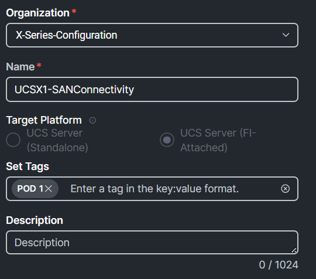
Under WWNN Pool, click Select Pool and then click Create Pool. Provide a name, set the tag, and click Next:

Fill in a block as you did for the WWPN pool, starting with 20:00:00:25:B5 using your pod number and a size of 8, then click Create:

Click on Add and select vHBA from Template:
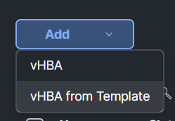
Give the vHBA a name with A at the end. Click Select vHBA Template, choose the VSAN-A template you created earlier, then click Select:
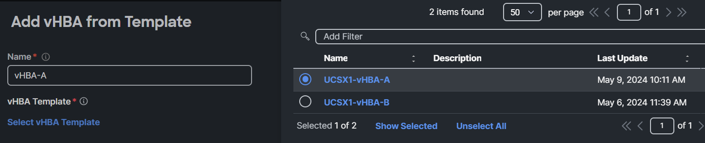
Change the PCI Order to 1 (0 is already being used by the vETH0), then click Add:
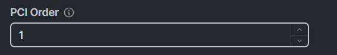
Perform the same steps to create vHBA-B and do not forget to change the PCI Order to 2.
The final result should be:

Click Create and then click Next.
You will see something like:

You will see the Summary. At the bottom of the screen, you see close. If you click on it, the UCS Server Profile Template is created. Select Derive Profiles.
Select your server that is assigned to you and click Next:

Change the Name to something unique to your Pod and click Next:
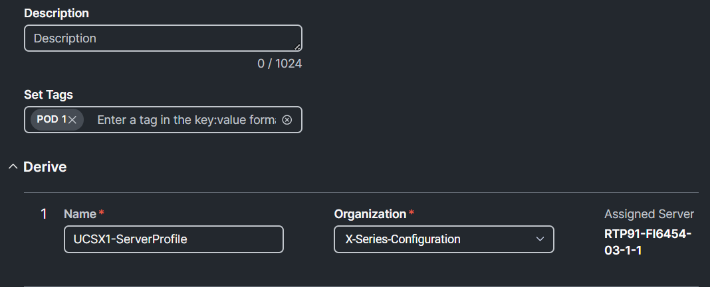
Verify the accuracy of the Summary provided, once verified, click Derive.